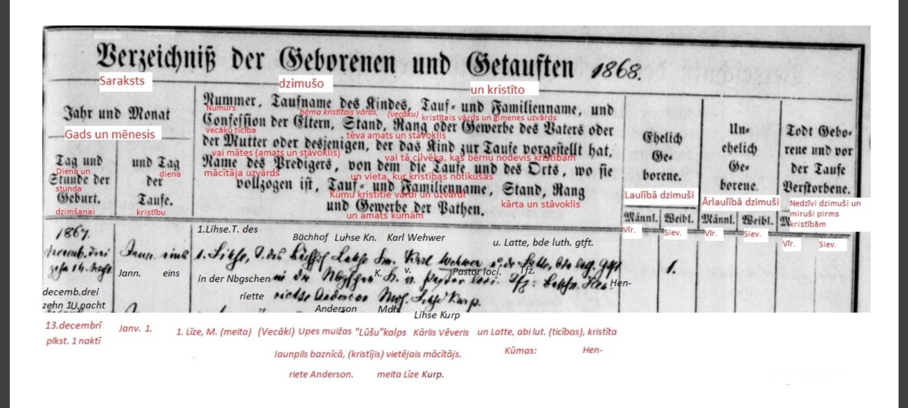

|  | |
Baznīcu grāmatu pētīšanas rīki |
|
|
LNA uzglabātajās baznīcu grāmatās atrodami kristību reģistri, iesvētīto saraksti, laulību un
miršanas reģistri un draudzes locekļu saraksti. Tās aptver laika posmu no 17. gadsimta vidus
līdz 1914. gadam. Fondā „Ārpus Latvijas baznīcu iestāžu dokumenti” atrodamas arī ziņas par
personām no latviešu draudzēm kaimiņvalstīs.
Visas Latvijas arhīvam pieejamās baznīcu grāmatas digitalizētas LNA vietnē Raduraksti.lv, kur tās
sakārtotas pa konfesijām, draudzēm un visbeidzot pa gadiem un ieraksta veidiem – kristītie),
mirušie un laulātie, atrodami arī dievgaldnieki, iesvētītie un draudžu locekļu saraksti. Datu
aizsardzības dēļ nav pieejami dokumenti jaunāki par 1914. gadu, taču šīs baznīcu grāmatas ir
iespējams aplūkot arhīvā uz vietas, iepriekš pieprasot piekļuvi dzimtas pētniecības nolūkiem.
Atsevišķi oriģināli baznīcu metrikām glabājas arī baznīcās, taču lielākajā daļā gadījumu nav
vajadzības traucēt mācītājus ar baznīcu grāmatu aplūkošanu klātienē.
Daudzām draudzēm baznīcu grāmatas ir brīvprātīgo indeksētas vietnē Raduraksti + Ciltskoki , kur iespējams pēc pamācības meklētājā ievadīt vārdu vai uzvārdu un atrast sarakstu ar iespējamajiem meklētajiem cilvēkiem. Ideālā gadījumā uzspiežot uz vārda jūs novirzītu uz saites Raduraksti.lv konkrēto ierakstu, taču adreses ir mainījušās, tādēļ nākas pielāgoties citādi. Līdzās būs norādīta draudze, gads, ieraksta veids un kadra numurs. Pēc tā orientējoties, vietnē Raduraksti.lv iespējams konkrētajā draudzē, konkrētajā gadā un konkrētajā ieraksta veidā viegli atrast meklēt cilvēku pēc konkrētā kadra numura. Šāda iespēja pēc vārda un uzvārda atrast kadra numuru, draudzi un pārējos parametrus ir arī vietnē Ciltskoki.lv. Jāpiebilst, ka šeit papildus ir jāzina, tieši kurā draudzē meklētais cilvēks reģistrēts, jo tikai maksas versijā ir iespējams meklēt caur visiem sarakstiem vienlaikus. Tiesa, samaksa par meklētāja izmantošanu uz diennakti ir simboliska un neatsver to darbu, ko ieguldījuši neskaitāmi cilvēki, rūpīgi indeksējot visus tur pieejamos dokumentus (kopumā indeksēti vairāk kā 3,5 miljoni ierakstu). Tālāk izsklāstīta iformācija par katras draudzes metrikām un to saturu. |
|

|
|
Luterāņu draudzes |
|
|
Luterticīgo vecākās baznīcu grāmatas ir Rīgas draudzēm. Vispārējās baznīcu metriskās grā-matas
uzglabājušās tikai kopš 17.gs. otrās puses, un agrāk arī nav rakstītas, jo nekādi tajā laikā
izdotie baznīcu noteikumi neparedz baznīcu grāmatu rakstīšanu.
Ar 1832. gada likumā noteikto ikgadējo baznīcas grāmatu norakstu nosūtīšanu Vidzemes un Kurzemes
konsistoriju arhīvos sāka krāties baznīcas grāmatu fondi. Lai paglābtu no bojāejas un savāktu
baznīcas grāmatas vienkopus, 1891. gadā izdeva rīkojumu draudzēm iesūtīt kon-sistorijai vecās
baznīcas grāmatas līdz 1834. gadam. Nodibinoties Latvijas valstij, Vidzemes un Kurzemes
konsistorijas arhīvus pārņēma iekšlietu ministrijas garīgo lietu pārvalde.
Jaunāko baznīcas grāmatu oriģināli (no 1834. gada), tāpat arī personāla grāmatas un dažādie reģistri joprojām glabājas attiecīgās draudzēs. Ar šādu baznīcas grāmatu sakopošanu panākts, ka luterticīgo draudžu baznīcas grāmatas uzglabājušās pilnīgāki un arī vieglāki pieejamas pētījumiem kā pārējo konfesiju baznīcas grāmatas. |
|

|
|
Pareizticīgo draudzes |
|
|
Pareizticīgo vecākās baznīcu grāmatas Krievijā par vispārēju parādību kļuva tikai 18.gs. sākumā.
Pirmie vispārējie noteikumi par metriskiem sarakstiem gan laikam ir garīgas sinodes 1721. gada
instrukcijā garīgās pārvaldes priekšniekam. Šādu kārtību ieturēja arī turpmāk — vajadzīgās ziņas
regulēja ar metrisko grāmatu veidlapām, kuras kopš 1806.g. sāka iespiest.
Kopš metrisko grāmatu sākuma līdz 1850.g. gandrīz visas Latvijas teritorijā esošās draudzes
ietilpa Pleskavas eparhijā, bet vēlāk Rīgas eparhijā. Vairums Latgales draudžu līdz pat Latvijas
valsts dibināšanai ietilpa Vitebskas un Polockas eparhijā. Rīgas konsistorija pārņēma no
Pleskavas un uzglabāja savā arhīvā arī attiecīgo draudžu senākās baznīcu grāmatas. Šo arhīvu
1915.g. evakuēja uz Krieviju, no kurienes atdabūja tikai daļu grāmatu (trūkst metriskās grāmatas
pēc 1863.g. Vidzemes un Kurzemes draudzēm).
Karavīri un to piederīgie ietilpa atsevišķās garnizonu draudzēs, kuru baznīcu grāmatas savāca divīzijas garīdznieks un pēc pārbaudes nosūtīja kara un flotes garīgo lietu pārvaldei, kādēļ šo draudžu metriskās grāmatas nav atdabūtas. |
|

|
|
Katoļu draudzes |
|
|
Katoļticīgo vecākā baznīcas grāmata Latvijā ir Rīgas Jēkaba draudzes kristīto un laulāto
sa-raksts 1582.-1621., bet parasti tās uzglabājušās tikai no 18.gs. sākuma vai pat vidus.
Lielāku vienveidību panāca ar Romas katoļu garīgo lietu kolēģijas 1834.g. 30. janvāra ukazu, kas
pavēlēja konsistorijām sagatavot jaunas metrikas grāmatas ar iespiestam ailēm un izsūtīt visam
draudzēm.
Kaut gan metrisko grāmatu veidlapas iespiestas krievu valodā, ieraksti tanīs vēl ilgu laiku turpinās latīņu valodā, un pēc agrāk ierastajām formulām. Ieraksti metriskās grāmatās izda-rāmi tūliņ pēc attiecīgā akta, tos ieraksta draudzes garīdznieki, bet atbildība par ierakstu pa-reizību ir prāvestam. Uz tāda paša parauga veidlapām rakstāmi metrisko grāmatu noraksti divos eksemplāros, kas gada beigās apliecināmi, iesienami un nosūtami turienes dekānam. Dekāns pēc rūpīgas pārbaudes vienu noraksta eksemplāru nosūta konsistorijas, bet otru turienes apgabaltiesas arhīvam. Sākot ar 1835. g. draudžu metrisko grāmatu noraksti krājās attiecīgo konsistoriju arhīvos. Kaut gan notikuši vairāki pārkārtojumi, visumā var teikt, ka līdz Latvijas valsts dibināšanai Latgales un Rīgas draudzes ietilpa Mogiļevas, bet Kurzemes draudzes – Telšu (Žemaitijas) diecēzē. Metrisko grāmatu oriģināli glabājas attiecīgās draudzēs. Pie pulkiem esošie katoļu garīdznieki (kara kapelāni) katra gada beigās nogādāja norakstus no viņu rakstītām metrikām tām guberņas valdēm, no kurām kara dienesta esošie iesaukti, neatkarīgi no noraksta nosūtīšanas Romas katoļu garīgo lietu kolēģijai. |
|

|
|
Pārējās konfesijas |
|
|
Pārējo konfesiju baznīcu grāmatas ar likumu atzītas tikai 19.gs. vidū.
1874. gada likums un 1888. gada piezīme Baltijas guberņām nosacīja, ka vecticībniekiem metriskās grāmatas par dzimšanas, laulāšanas un miršanas gadījumiem pilsētās un apriņķos raksta apriņķa priekšnieka palīgi, bet tanīs pilsētās, kas nav pakļautas apriņķa policijai - policijas iecirkņu pārstāvji vai uzraugi. Vecticībnieki, kas dzīvoja laukos, dzimšanas un miršanas gadījumus paziņoja pagasta valdei, kur tos ierakstīja atsevišķās grāmatās. Katra gada beigās metriskās grāmatas policija nodeva guberņas valdē pārbaudei un uzglabāšanai. Arī pašās draudzēs rakstītas metriskās grāmatas. Baptistiem civilstāvokļa aktu reģistrēšanu regulēja 1879.gada likums, kas noteica, ka metriskos sarakstus par baptistu laulībām, dzimšanas un miršanas gadījumiem raksta turienes pašvaldības iestāde. Likuma papildinājums 1888. gadā Baltijas guberņās uz baptistiem attiecināja tos pašus noteikumus, kādi bija par vecticībnieku metriskām grāmatām. Jūdaistu metrisko grāmatu rakstīšanu regulēja 1835. gada likums. Rabīnam metriskās grāmatās bija jāieraksta: 1) katra vīriešu kārtas bērna apgraizīšana un katra sieviešu kārtas bērna vārda došana, atzīmējot bērna vecākus un dzīves vietu; 2) visas laulības un šķiršanas, atzīmējot laulāto vai šķīrušos vārdus un uzvārdus, vecumu un sabiedrisko stāvokli, kā arī klāt bijušos lieciniekus; 3) abēja dzimuma un jebkāda vecuma mirušo apbedīšana, atzīmējot vārdu un uzvārdu, vecumu, sabiedrisko stāvokli un slimību, ar ko miris. Ieraksti bija jāizdara žīdu un krievu valodā. Rabīniem bija vēl savas atsevišķas grāmatas vai burtnīcas, kurās tie atzīmēja visas metriskām grāmatām vajadzīgās ziņas, bet ne vēlāk kā mēneša laikā katrs metriskais ieraksts bija jāatzīmē valdības izsniegtajā grāmatā. Katra gada pirmajās dienās abi šie pagājušā gada metrisko grāmatu eksemplāri rabīnam bija jānogādā pilsētas valdē, kur tos salīdzināja. Valdības izsniegto metrisko grāmatu paturēja arhīvā, bet draudzes grāmatu izsniedza rabīnam atpakaļ. Latvijas laikā, nodibinoties dzimtsarakstu nodaļām, tās pārņēma jūdaistu metriskās grāmatas no pilsētas valdes arhīva. |
|
|
|
|
Baznīcu grāmatu valoda |
|
|
Luterāņu baznīcu grāmatas rakstītas vācu valodā, taču ik pa laikam salasāms pat kāds teikums
latviešu valodā. Var būt grūtības salasīt, piemēram, miršanas iemeslu, jo slimību nosaukumi
laika gaita ir mainījušies. Var izmantot vārdnīcas, piemēram, vietnē Wikipedia atrodama lapa ar
vēsturisko slimību nosaukumu skaidrojumiem vācu valodā. Ar 1892. gadu luterāņu baznīcu grāmatās
vācu valodas vietā stājas krievu valoda. Tas radīja diezgan lielas grūtības garīdzniecībai, un
vajadzēja pat izdot īpašu rokas grāmatu par vārdu un uzvārdu rakstību krievu valodā. Šī iemesla
dēļ ieraksti var būt grūti saprotami, taču liels atvieglojums ir fakts, ka liela daļa
garīdznieku tomēr turpināja vismaz vārda norādīšanu vācu valodā.
Var būt grūtības vispār salasīt atsevišķus radniecības vārdus, amatus, vietvārdus, personvārdus,
muižu nosaukumus vai saprast, kādas draudzes atradušās attiecīgajā novadā . Šāda veida
informācija (personvārdu, saīsinājumu, amatu un radniecības apzīmējumu tulkojumu saraksti, poļu,
vācu un krievu valodas burtu dažādās rakstības u.c. nozīmīgas datubāzes) atrodama vietnes Ciltskoki.lv sadaļā „palīgs”.
|
|
Datu ticamība |
|
|
No avotu kritikas viedokļa jāsaka, ka baznīcas grāmatās vislielākā ticamība piešķirama tiem
datiem, kurus konstatējis pats ierakstu izdarītājs jeb mācītājs – kristīšanai, iešanai pie
diev-galda, laulāšanai un apbedīšanai, jo ieraksti bija jāizdara tūliņ pēc attiecīgā garīgā akta
izpildīšanas. Turpretim ģenealoģiskā ziņā svarīgākiem datiem – dzimšanas un miršanas datiem,
kurus pats ierakstītājs reti kad būs tieši konstatējis, ticamība jau mazāka. Vecākajās baznīcu
grāmatās šo ziņu bieži pavisam trūkst.
Uzdoto mirušā vecumu un dzimšanas vietu ne visi mācītāji salīdzināja ar attiecīgiem ierak-stiem dzimušo sarakstā, visvecākajās baznīcu grāmatās tas pat nebija iespējams. Tāpat nevar akli paļauties ierakstam par nāves cēloni, jo to parasti pierakstīja pēc tuvinieku izteicieniem (gadījumos, kad bija aizdomas par varmācīgu nāvi, 19. gs. vidū jau parādās atzīmes par poli-cijas atļauju apbedīšanai). Apbedīto sarakstos nereti trūkst miršanas datuma, daudzkārt trūkst arī atzīmes par vecumu, sevišķi vecākiem ļaudīm, jo paši piederīgie to nevarēja precīzi pateikt. Daudz kristīto sarakstos trūkst dzimšanas datuma, bet arī uzdotajiem nevarētu arvien ticēt, jo pēc likuma bērns bija jānokristī 8 dienu laikā, kas lauku apstākļos ne vienmēr bija iespējams, un vairoties no soda vecāki varēja uzdot bērnu jaunāku. Jāņem vērā arī kalendāru pāreja. Praktiski var pieņemt, ka Vidzemē visu laiku, kamēr rakstī-tas baznīcas grāmatas, bijis jūlija kalendārs līdz pat 19I8.g., kad ievests jaunais stils. Lai dabūtu visus datus jaunajā stilā, vecā stila datumam jāpieskaita: no 1582. 5. X līdz 1700. 29. II - 10 dienas, no 1700. 1. III līdz 1800. 29. II - 11 dienas, no 1800. 1. III līdz I900. 29. II - 12 dienas, no 1900. l. III līdz 1919. - 13. dienas. Kurzemē un Zemgalē no 1617. gada līdz 1796.g. 28. I (vecā stila) bija gregora kalendārs, pēc tam jūlija, līdz vēlāk galīgi pārgāja uz jauno stilu. Par pāreju no viena stila uz otru, baznīcu grāmatās parasti ir ieraksti. Lai atšifrētu datumus 18.gs. uzrādītām baznīcas svētdienām, jāņem palīgā kāda hronoloģijas rokas grāmata. |
|
|
Projekta darba autors - Bauskas 2. vidusskolas
11.a klases skolnieks
Henrijs Kravals
Projekta darba konsultante - psiholoģijas un pedagoģijas maģistre Iveta Jabločkina © 2023 |
:max_bytes(150000):strip_icc()/108757759-58b9cac63df78c353c374c2c.jpg)